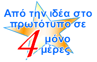
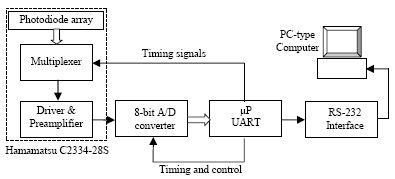
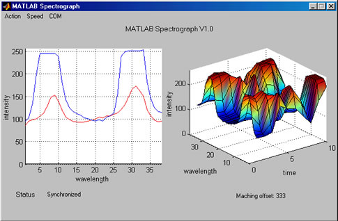

| Το
κύκλωμα αυτό σχεδιάστηκε για να χρησιμοποιηθεί ως αισθητήριο σε
ένα φασματογράφο φράγματος για τις ανάγκες πειραμάτων υψηλών ενεργειών
και παρουσιάστηκε μαζί με το συνολικό
project στο "8th
ICATPP Conference on Astroparticle, Particle, Space Physics, Detectors
and Medical Physics Applications" το 2003 στο Como της
Ιταλίας. Η λειτουργία του αποσκοπεί στο να παίρνει 1-D δείγματα
από ένα photodiode array ειδικών προδιαγραφών της Hamamatsu. Κάθε
φωτο-αισθητήρας αντιστοιχεί σε ένα μήκος κύματος και με την βοήθεια
του computer μπορούμε να πάρουμε το φάσμα ακτινοβολίας σε μία ευρεία
περιοχή.
|  |
Το block διάγραμμα της κατασκευής |
Το κύκλωμα αυτό είναι ένα 38κάναλο 8bitο A/D με σύνδεση στην σειριακή
θύρα ενός υπολογιστή. Χρησιμοποιεί τον δημοφιλή μικροελεγκτή AT90S2313
και σχεδιάστηκε για χρήση με τις φωτοευαίσθητες επιφάνειες S4114
- 380 και την πλακέτα multiplexing και ενίσχυσης C2334 της Hamamatsu.
Η σχεδίαση πάραυτα είναι αρκετά γενική και μπορεί να χρησιμοποιηθεί
οπουδήποτε χρειάζεται ένα ευέλικτο A/D ή ακόμα και D/A μιας και
το AD7569 της Analog Devices που χρησιμοποιείται τα περιλαμβάνει
και τα δύο. Για παράδειγμα με μικρές τροποποιήσεις το κύκλωμα μπορεί
να χρησιμοποιηθεί ως χαμηλής ποιότητας κάρτα ήχου για την σειριακή
θύρα! Το κύκλωμα ταιριάζει ακόμη σε περιπτώσεις data loging και
data acquisition χαμηλής ταχύτητας.
|  |
| Εικόνα από την εκτέλεση
του προγράμματος |
| Πρόγραμμα σε C Που δημιουργεί
τους επιθυμητούς παλμούς
στην παράλληλη θύρα |
| pulses.c |
|
|
|
|